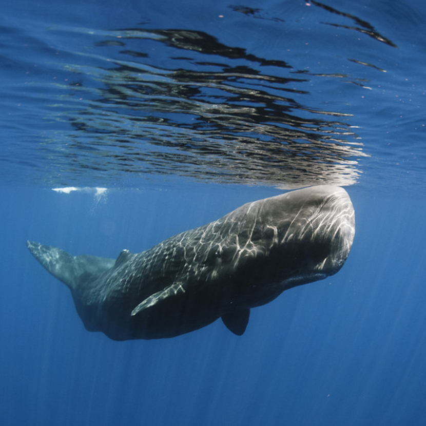

Oh Whale,...
Oh hello, I almost didn’t see you there. My name is Wade. Wendy said that I really needed to meet you guys. She is always trying to make me come out of my shell. Does she think I’m a crab? Anyway, I am a sperm whale, like the one in Moby Dick. We are the largest of the toothed whales, which makes us the largest toothed predator. Our females live together in groups with the younger ones. Us males usually stay with our mothers for 10 years before we go off on our own. We can grow up to be about 52 feet on average, but I’ve seen some sperm whales that are almost 67 long. Our heads are about one-third of our entire length. I guess that’s what they call headstrong, am I right? If you are wondering what I look like, you can see a picture of me below. I’m glad you guys stopped by, but I have to swim along now. It’s almost time for dinner. I hope to see you around again soon!
Wade, is that you?
Did you know?
Placeholder Facts
New Fact